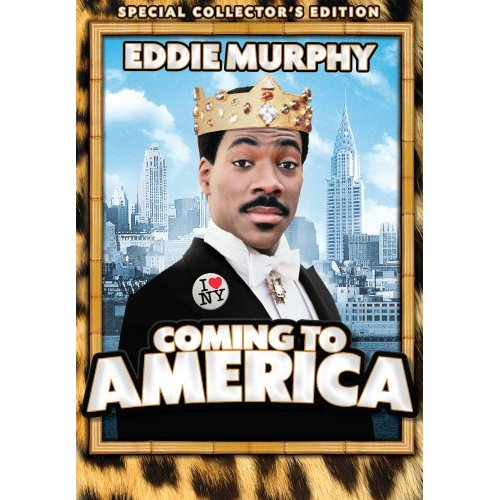
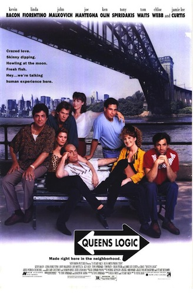
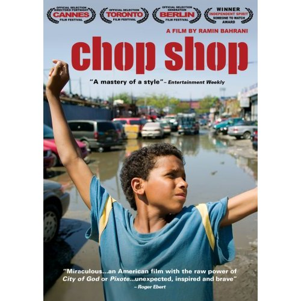
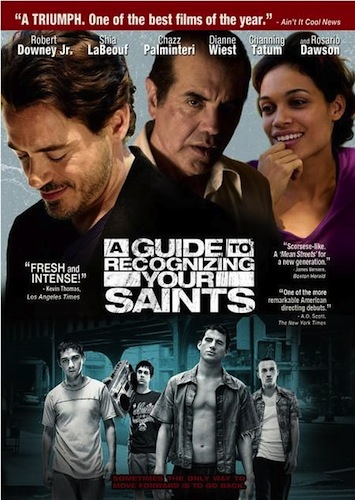
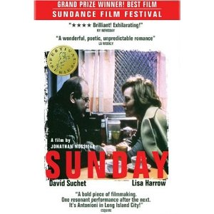

|  |
Coming to America- 1988
Eddie Murphy's iconic film follows Prince Akeem of Zamunda and Semmi (played by Arsenio Hall) as they travel from Zamunda to Long Island City. Both Eddie Murphy and Arsenio Hall each play four characters in the movie. |
Queens Logic-1991
Despite an overlooked movie about a group of friends preparing for their friend's wedding, this movie had an all star cast. John Malkovich, Kevin Bacon, Megan Mullaly, and Jamie Lee Curtis were just some of stars in this overlooked comedy. . |
 |
|  |
Chop Shop-2007
This indie movie tells the classic tale of a young boy, Alejandro as he juggles multiple hustles(selling candy, working at an auto-body shop) to survive in Corona, Queens. The movie shows the all too familiar scenes of Willets Point, Flushing Meadow Park and the 7 train. |
A Guide to Recognizing Your Saints-2006
A movie based on a book written by queens native, Dito Montiel, A guide stars Rosario Dawson, Robert Downey Jr., Channing Tatum, and Shia LaBeouf. The film follows Robert Downey as he travels from LA to Astoria to confront some of his childhood demons. |
 |
|  |
Sunday - 1997
This movie follows a man going through a middle aged crisis and living in a homeless shelter in Queens. The movie was actually filmed in a homeless shelter in Queens, and highlighted the elevated train lines and store fronts that are characteristic of Queens. |